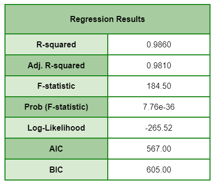

Exploratory Data Analysis

As Population Booms, Poverty Looms: Regional Population and Poverty (2020)
The plot consists of a bar graph depicting the total population per region and a line graph showing the magnitude of poverty per region. The data on the level of urbanization of each region was utilized to classify areas as either urban or rural. As seen in the bar graph, urban regions have a higher overall population. One of the reasons could be due to the influx of individuals moving to cities in search of better employment opportunities. However, urban regions also have a larger number of residents living in poverty. This suggests that for all opportunities urban regions provide, it also comes with major challenges, such as higher cost of living, trapping Filipinos in poverty. On the other hand, rural areas, while having smaller populations, tend to experience less poverty. Overall, this graph shows the need for effective poverty alleviation programs that specifically address the diverse and complex challenges faced in urban and rural settings.
How does poverty alleviation differ between urban and rural areas in the Philippines?

Research Question 1 Visualization
Daily life in the Philippines will be difficult if there is insufficient access to utilities such as electricity and water. Through this graph, we check if there is a difference in the availability of essential amenities between urban and rural areas and find out which area may need more assistance. Using data from the 2022 Annual Poverty Indicators Survey, we discover what percent of households have sufficient access to water, electricity, internet, and public transportation. For water and electricity, we observe that rural and urban areas have high access to such utilities and have little difference between them. For broadband internet, we notice that it is more prevalent in rural households, meaning that there could be a problem with distribution in urban areas and assistance may be needed. For public transportation, the graph suggests that rural areas must give more importance in giving access to public transport in order to close the gap between urban and rural areas in this sector.
Hypothesis Testing
Preprocessing
From the "2021 Family Income and Expenditure Survey" of the Philippines Statistics Authority, we isolated three columns: URB, TOINC, and TOTEX. URB is whether the household surveyed is in an urban (1) or rural (2) area. TOINC is the total income (in pesos) of the household in 2021, and TOTEX is the total expenditure. Using data from "Highlights of the 2021 Full Year Official Poverty Statistics" of the PSA, we see that the poverty threshold is 12,030 pesos per month, or 144,360 pesos per year. Using this number, we filter out the households to those under the poverty line. Then, we checked whether the household has a higher income than expenditure (meaning that savings are increased) and store the result as a boolean in the table. The counts of this variable are what is tested for independence.
Results
After preprocessing, we get this contingency table:
When we perform the chi-square test of independence on this data, we get a p-value of 2.3759450908147093 x 10-17. This is less than the 0.05 significance level, meaning that we reject the null hypothesis and accept the alternative hypothesis.
Thus, one area is more likely to successfully alleviate poverty compared to the other.
This means that urban and rural areas are not on the same level in terms of capability of alleviating poverty. From the contingency table, 77.49% of the urban poor population is saving money compared to 81.07% of the rural poor population. This result may have stemmed from the difference in access to basic necessities. As seen in the data visualization for RQ 1, there is a gap between urban and rural areas in terms of accessibility to some utilities. Note that further testing will be done in order to confirm the cause.
How do employment opportunities vary across the regions in the country?

Research Question 2 Visualization


With data taken from the Philippine Statistical Yearbook (2022), we visualized the distribution of employees for each major industry group per region. The regions are further clumped into their respective island groups: Luzon, Visayas, and Mindanao. The top three most populated industries are agriculture, construction, and trade & repair; with Luzon having the most number of employees of the three regions in total. This information is crucial in recognizing the employment opportunities that are available for respective industries in different regions.
Hypothesis Testing
Preprocessing
With the data taken from the yearbook, we first grouped the regions by their respective island groups Luzon, Visayas, and Mindanao to make the visualization less dense. We also limited our observations to the most recent data available in 2021. The decision was also made to exclude industries that have only one or no employees listed in the table.
Results

For this dataset, we deemed it best to use ANOVA for the analysis. We checked the ANOVA for each individual region,
and then checked the summary of the model. The results show an overall model p value of 7.76e-36 (7.76 x 10^-36),
which is indicative of an extremely low probability of the null hypothesis being true. The value is much lower than
the significance level of 0.05, meaning that we reject the null hypothesis and accept the alternative hypothesis.
It is clear that urbanized areas, particularly the regions located in Luzon, have more employment opportunities available to them. Major industries generally favor these areas because of their higher population, and thus bigger workforce. However, we cannot decisively conclude that more opportunities means better chances of poverty alleviation from this alone. There are far too many factors to consider in this discussion. one of them being the cost of living. The cost can differ wildly depending on the region they live in and the necessities their jobs demand. Further testing is a must before any solid conclusions can be made.
Machine Learning
Preprocessing
The dataset to be used is the March 2023 Labor Force Survey from the Philippines Statistics Authority.
Using the demographic variables (age, sex, marital status, household size, urban/rural, highest educational attainment), we
will use k-means clustering to group similar people and see how the different groups compare in terms
of the job related variables. This will hopefully give a sense of how the demographic variables
are related to the job related ones.
For this data we are only considering working age Filipinos (15 years old and over) who are not OFWs,
so we filter out those who do not fit this criteria.
The highest educational attainment is split into 11 categories, the major occupation group is split into 10 categories,
and the major industry group is split into 22 categories according to the dictionary included with the data. These
categories will be listed as the results are shown.
For the k-means clustering, the features will be scaled using scikit-learn's StandardScaler so that they have an equal effect on the clusters.
After initial preprocessing, we do tests to determine what number of clusters would be used. The first test is checking the inertia of each possible number of clusters. This is called the inertia, and a lower value is better for clustering. We will also use the silhouette scores of each k to determine the best number of clusters. This is a measure of how similar members of a cluster are to each other, and a higher score indicates less overlap between clusters.


As can be seen in the graphs, 6 seems to be the optimal number of clusters. It is located at a slight elbow in the inertia graph, and it is at a peak in silhouette score. Therefore, I will use six clusters for the k-means clustering.
Results
For the initial dataset, the number of people who were of working age and not an OFW was 32955. Most of those people lived in NCR (14.30%), and had an average age of 39.50, with a standard deviation of 17.91 years. The percentage of people living in urban areas was 49.34%, and the percentage of males was 50.55%. For employment, 62.36% of the population had work.
When the dataset is split into 6 clusters, here are how the demographic features look like:


Most common region per cluster:
- • Cluster 1: ARMM (6.93%) [note that there are 0 people from NCR]
- • Cluster 2: NCR (29.04%)
- • Cluster 3: Region 8 (8.88%)
- • Cluster 4: Region 8 (10.04%)
- • Cluster 5: NCR (18.21%)
- • Cluster 6: NCR (29.85%)
Most common marital status per cluster:
- • Cluster 1: Married (92.52%)
- • Cluster 2: Married (50.84%) [Single is a close second at 48.98%]
- • Cluster 3: Married (87.19%)
- • Cluster 4: Single (90.38%)
- • Cluster 5: Widowed (59.28%)
- • Cluster 6: Married (58.44%)
Most common educational attainment per cluster:
- • Cluster 1: Junior High School Completer (27.77%)
- • Cluster 2: Junior High School Completer (28.57%)
- • Cluster 3: Elementary Undergraduate (26.29%)
- • Cluster 4: Junior High School Undergraduate (20.73%)
- • Cluster 5: Junior High School Completer (25.45%)
- • Cluster 6: Junior High School Completer (27.77%) [College Graduate is 22.88%]
The purpose of the clustering was to check if the clustering people by their demographics could give us insights on work-related variables, and here is how they look like for our current clusters.

Most common major occupational group per cluster (percentage of working population):
- • Cluster 1: Elementary Occupations (35.96%)
- • Cluster 2: Elementary Occupations (27.91%)
- • Cluster 3: Skilled Agricultural, Forestry and Fishery Workers (42.46%)
- • Cluster 4: Elementary Occupations (50.20%)
- • Cluster 5: Service and Sales Workers (35.55%)
- • Cluster 6: Service and Sales Workers (39.82%)
Most common major industry group per cluster (percentage of working population):
- • Cluster 1: Agriculture and Forestry (34.99%)
- • Cluster 2: Construction (16.73%) [Wholesale and Retail Trade; Repair of Motor Vehicles and Motorcycles is close at 16.19% and Transportation and Storage is also close at 15.06%]
- • Cluster 3: Cluster 3: Agriculture and Forestry (46.41%)
- • Cluster 4: Cluster 4: Agriculture and Forestry (30.21%)
- • Cluster 5: Wholesale and Retail Trade; Repair of Motor Vehicles and Motorcycles (27.06%)
- • Cluster 6: Wholesale and Retail Trade; Repair of Motor Vehicles and Motorcycles (34.96%)
Discussion
Many things can affect what job a person gets. For example, a person may want to get a job early if they
have a very large household and support their family. Elderly people may retire and not have work anymore.
The purpose of using machine learning on this dataset is to help see connections between these factors on
the availability and type of work in the Philippines.
The results of the clustering may present a clearer picture of what demographic factors influence work in
the Philippines. We can separate the clusters by their demographics, and I noted the most obvious characteristics
of the clusters.
- • Cluster 1: Rural middle-aged married women not from NCR
- • Cluster 2: Urban middle-aged men
- • Cluster 3: Rural elder less-educated married men
- • Cluster 4: Rural young single people not from NCR
- • Cluster 5: Elderly widows
- • Cluster 6: Urban middle-aged women
The household size and educational attainment seemed fairly consistent between all the clusters, but all other demographics were different among the groups.
The first observation we look at is the fraction of working people in the clusters. It makes sense that Cluster 4 has the lowest percentage as the average age is 22, the lowest of all the clusters. The next lowest three (Clusters 1, 5, and 6) are almost all women and the highest two clusters (Clusters 2 and 3) are entirely composed of men. This could imply that there is a difference in employment between sexes in the Philippines, which has been noticed by the National Economic and Development Authority [1] and could be the topic of further research.
The other observation that we would like to draw attention to is that every rural cluster (Clusters 1, 3, and 4) hase the most common industry group of Agriculture and Forestry. This seems to indicate rural areas have less variance in job sectors than urban areas, which would explain why people move to urbanized places like Metro Manila to work. Farming has historically had low wages[2], and the minimum wage in the Philippines even excludes them [3]. The conditions that they face could be improved by the government so that this difference could be lessened.
More domain knowledge could provide greater insight and allow us to make more connections between the other demographic variables, and further research could confirm the results. However, this is a good starting point for future research and provides insights on what factors influence employment.